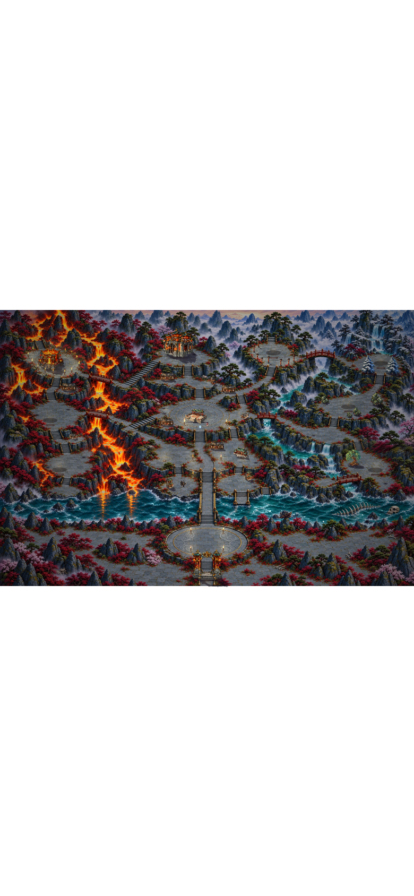
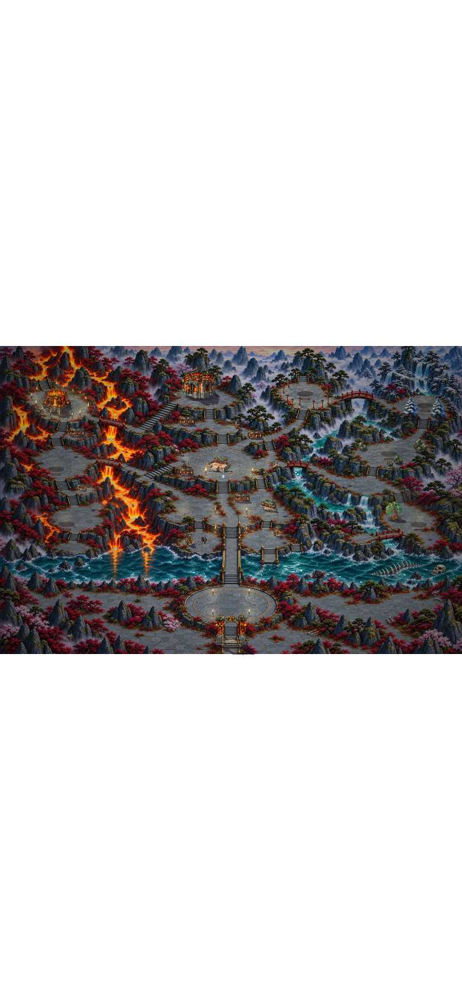
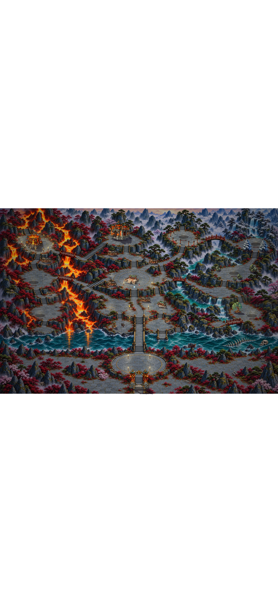
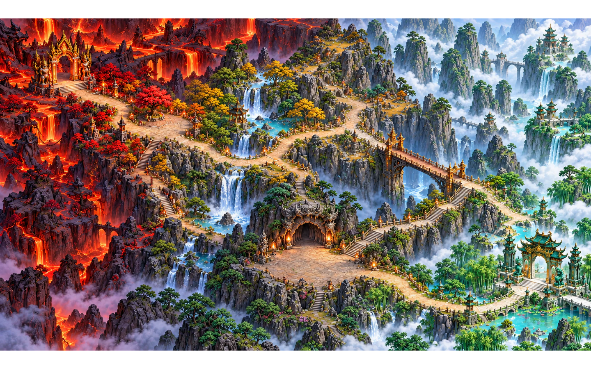
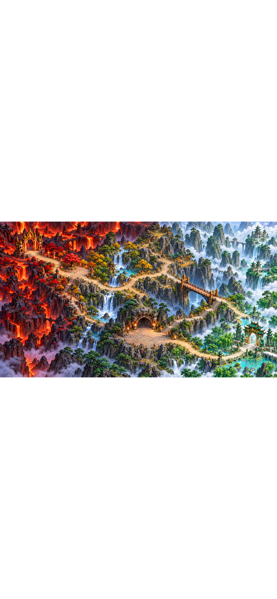
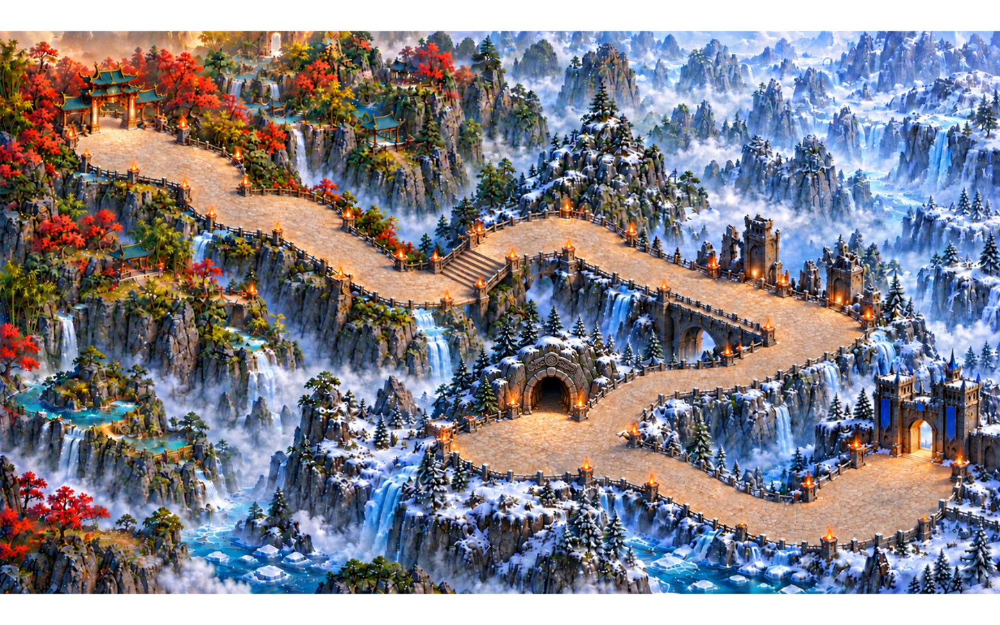
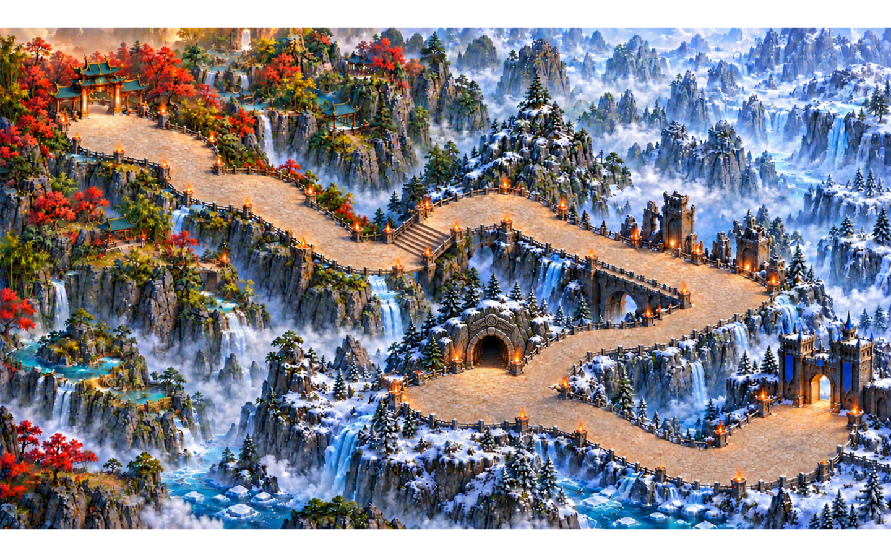
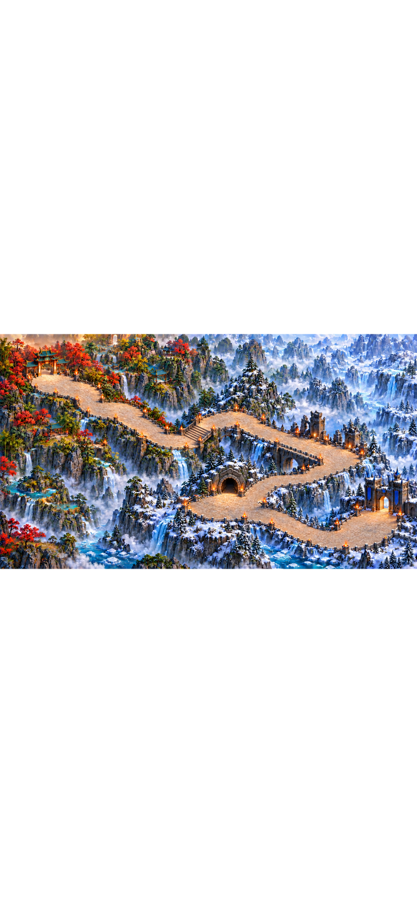
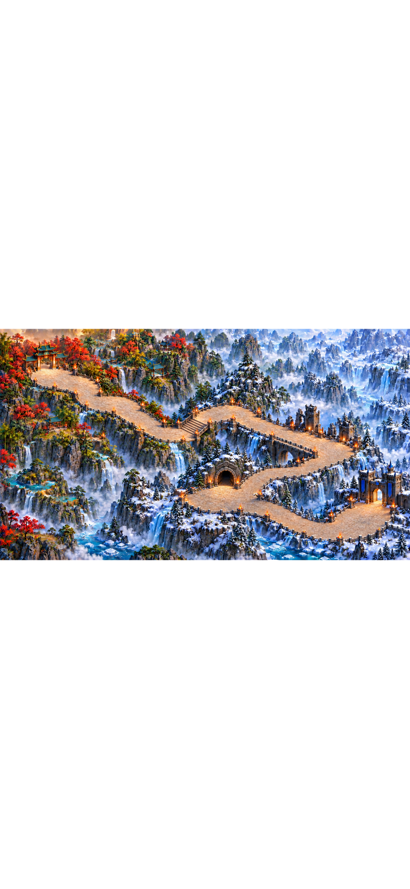

Effect OFF / ON in the current renderer, not HEAD screenshots. Real town renderer at overview camera; border painted-map component fixtures omit runtime actors. These are not Chrome screenshots. Native raster/font/sprite artifacts prevent final visual sign-off.
Acceptance self-check and limitations · CPU diagnostics (not LOAD-01b) · Final full test run · Raw checks








